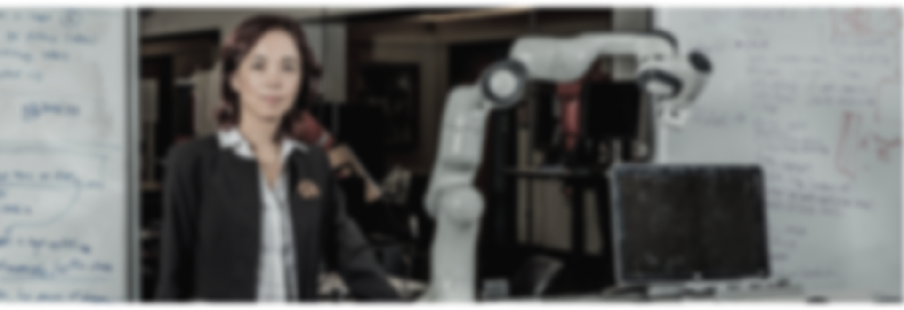

>


" I imagine a world in
which AI is going to make
us work more
productively, live longer,
and have cleaner energy "
Dr. Li has been working with policymakers nationally and locally to
ensure the responsible use of technologies, including a number of
U.S. Senate and Congressional testimonies, her service as
a special advisor to the Secretary General of the United Nations, a
member of the California Future of Work Commission for the
Governor of California in 2019 - 2020, and a member of the
National Artificial Intelligence Research Resource Task Force
(NAIRR) for the White House Office of Science and Technology
Policy (OSTP) and the National Science Foundation (NSF)
in 2021-2022. Dr.
Li is an elected Member of the National Academy of Engineering
(NAE), the National Academy of Medicine (NAM) and American
Academy of Arts and Sciences (AAAS).


EARLY CAREER
From 2005 to 2006, Li was an assistant professor in the
Electrical and Computer Engineering Department at
the University of Illinois Urbana-Champaign, and from
2007 to 2009, she was an assistant professor in the
Computer Science Department at Princeton University.

University of Illinois Urbana-Champaign
Princeton University
STANFORD
UNIVERSITY
Fei-Fei Li is a Professor at Stanford University, where she has served for over 15 years. She was the Director of the Stanford Artificial Intelligence Laboratory (SAIL) from 2013 to 2020, leading pioneering research in AI and mentoring numerous students. Her work at Stanford has significantly advanced the field of AI and established the university as a leader in AI research and education.